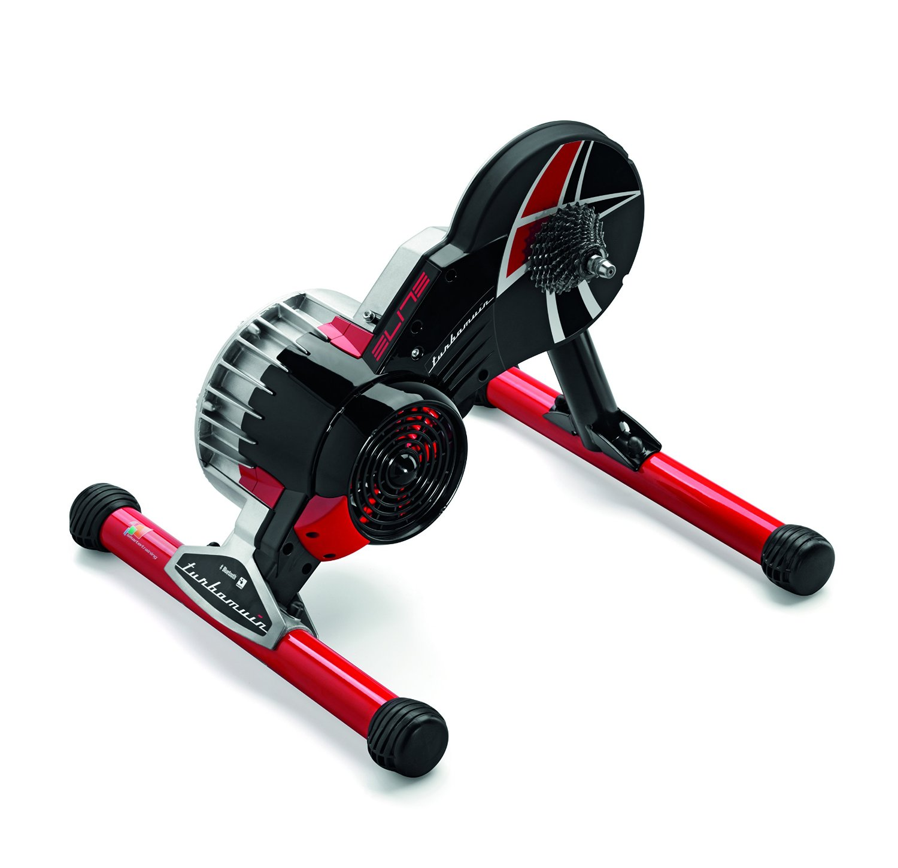

Zu beginn eurer Karriere als Hobbyradler empfiehlt es sich ein Rad mit robustem Rahmen zu wählen, da man gerade als Anfänger ein erhöhtes Risiko hat, zu stürzen. Es macht also ebenso sinn nicht gleich ein Highend Fahrrad für ein paar tausend Euro zu kaufen, sondern ein wartungsarmes mit kostengünstigen Ersatzteilen. In Zukunft und mit genügender Erfahrung lohnt sich dann aber auch der Griff zu einem Fahrrad mit Carbon-Rahmen! Beim Fahrrad kommt es vor allem auf das richtige Bike-Fitting an. Achtet darauf, dass ihr euch ein Fahrrad besorgt, was zu eurer Körpergröße und Anatomie passt, da sonst eine ineffiziente Kraftübertragung beim Treten und Fehlstellungen bis hin zu Schmerzen und Verletzungen auftreten können. Lasst euch die Messwerte geben, damit ihr bei einem zukünftigen Kauf diese wiederverwenden könnt, um euch das Geld für ein weiteres Bike-Fitting zu sparen. Das empfohlene Fahrrad ist also nicht für jedermann. Es soll euch aber eine Orientierungshilfe geben, da die Auswahl doch recht groß ist.
Navigationssystem bzw. Fitness-Tracker Garmin Edge 1000
GPS-Multitalent für ambitionierte Radfahrer
Der neue Edge 1000 kommt mit dem bisher größten Display aller Garmin Radcomputer auf den Markt. Darauf kann man die bereits vorinstallierte Fahrradkarte erstmals sowohl im Hoch-als auch im Querformat nutzen. Ein Umgebungslichtsensor sorgt dank intelligenter Displaybeleuchtung für eine Ablesbarkeit, ein energiesparender Standby-Modus für eine besonders lange Laufzeit.
Neu sind außerdem dynamische, leistungsbasierte Trainingspläne samt Kalenderfunktion. Absolutes Highlight des Edge 1000 ist allerdings die neue Performance-Funktion „Segmente“ : Auf selbst definierbaren Streckenabschnitten kann man sich unterwegs virtuell mit Freunden oder anderen Usern messen. Ergebnisse dazu werden in Echtzeit auf dem Edge 1000 angezeigt–ebenso wie Alarme für den Start / das Ende von Segmenten und die Bestenliste. Die Segmentfunktion sorgt für ständige Motivation und spornt an, immer besser zu werden. Ganz gleich, ob man Bestleistungen verbessern oder sich mit den Profis messen möchte–der Edge 1000 ist ein Multitalent.
Wenn ihr darüber hinaus den Edge 1000 mit eurem Smartphone und der Garmin Connect Mobile-App koppelt, könnt ihr diverse Online-Funktionen, beispielsweise LiveTracking, Alarme für eingehende Anrufe und SMS-Nachrichten, Weitergabe über soziale Medien, Wetterdaten und drahtlose Upload-Funktionen nutzen.
Radfahren im Winter - in Deutschland? Kein Problem!

Einer von vielen Zwift-kompatiblen Trainern. Quelle: Elite-Rollentrainer
Mit dem richtigen Rollentrainer kann man auch ganz bequem Zuhause trainieren, und sich trotzdem dank des technischen Fortschritts mit anderen Messen bzw. mit anderen zusammen fahren. Das ganze nennt sich Zwift: